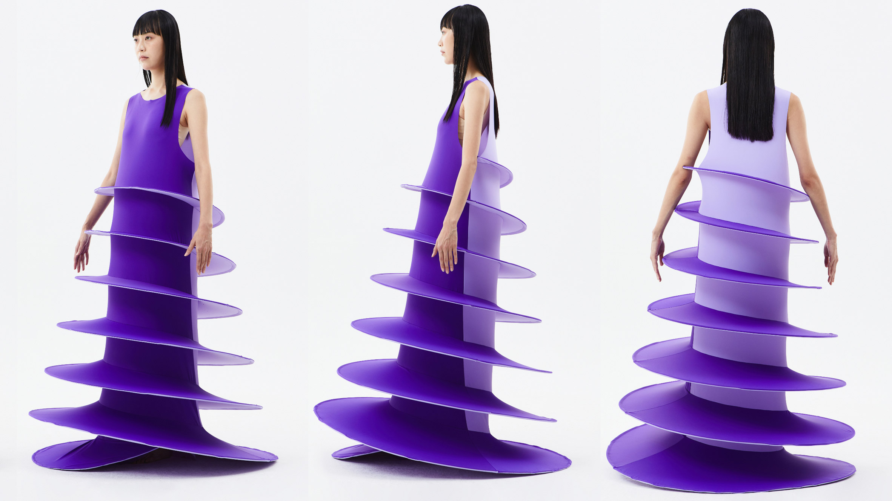

8
Is thorough down to
the last detail.
Nothing must be arbitrary or left to chance. Care and accuracy in the design process show respect towards the consumer.
Sun Woo's
collapsible dress
from her 2020
In Between
fashion series.

Back
Next